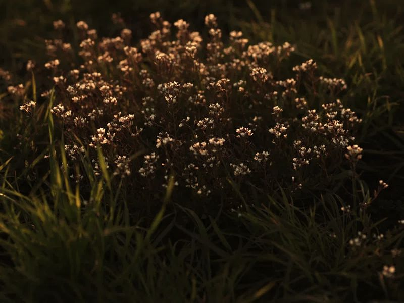

Допомогти бджолам може кожен, навіть із маленькою ділянкою.
Головне, щоб на ділянці щось цвіло від весни до осені. Рано навесні бджолам допомагають верба, ліщина, крокуси й кульбаби. Влітку добре працюють буркун, фацелія, лаванда, чебрець, материнка й котяча м’ята. Пізнього літа й восени бджіл підтримують айстри та інші пізні квіти. Що цвіте й коли, показує календар «Медоноси». Прості одиночні квітки кращі за махрові: у махрових бджола часто не може дістатися до нектару.
Бджолам потрібна вода, особливо навесні й у спеку. Мілка миска чи блюдце з камінцями або з мохом підійдуть: бджола сідає на камінець і п’є, а не тоне. Ставте поїлку на сонячному місці й не давайте їй пересихати: бджоли звикають до одного місця й повертаються туди.
Не обприскуйте квітучі рослини. Якщо без обробки не обійтися, робіть її поза цвітінням, увечері, коли бджоли вже не літають, і ніколи не обробляйте квітучі бур’яни. Не паліть суху траву: разом із нею гинуть комахи, у тому числі запилювачі.
Бджоли у вулику — лише одні з запилювачів. Є ще джмелі й сотні видів диких одиночних бджіл, і їм допомагають ті самі речі: квіти, вода, шматок нескошеної трави й пухка суха земля, де вони можуть селитися. Навіщо це потрібно всьому світу, пояснює стаття «Навіщо світові бджоли».
Рій у кроні дерева чи на паркані виглядає страшно, але в цей момент бджоли зазвичай не агресивні. Не кидайте в них нічого й не поливайте, а поки подзвоніть пасічнику поруч: він знає, як його забрати.
Допомогти можна й з балкона. У горщиках добре ростуть чебрець, лаванда, м’ята й материнка: вони цвітуть, і бджоли їх відвідують. Поставте мілку поїлку з камінцями, і навіть невеликий балкон стане для бджіл місцем зупинки.
Ідеальна ділянка для бджіл — та, де щось цвіте з квітня по жовтень. Навесні це верба, ліщина, крокуси й кульбаби, влітку буркун, фацелія, лаванда й чебрець, восени астри. Не потрібно садити все й одразу: навіть два-три види, що цвітуть у різний час, уже допомагають.
Сухі стебла рослин, купа гілок і шматок неприбраного листя — це житло для диких запилювачів, зокрема одиночних бджіл, які зимують у порожнистих стеблах. Тому осіннє «ідеальне» прибирання краще відкласти на весну.
Засадіть різні рослини, що цвітуть у різний час, поставте поїлку, не обприскуйте цвітіння й не прибирайте все до останньої стеблини: ось прості кроки для бджіл.
Чи треба знищувати кульбаби?
Ні: кульбаби — одне з перших джерел нектару й пилку навесні. Підстригайте їх пізніше, коли відцвітуть.
Чи можна самому тримати бджіл?
Можна, але спершу варто познайомитися з досвідченим пасічником і прочитати про життя бджіл.
Що ще загрожує бджолам?
Про це в статті «Що загрожує бджолам».